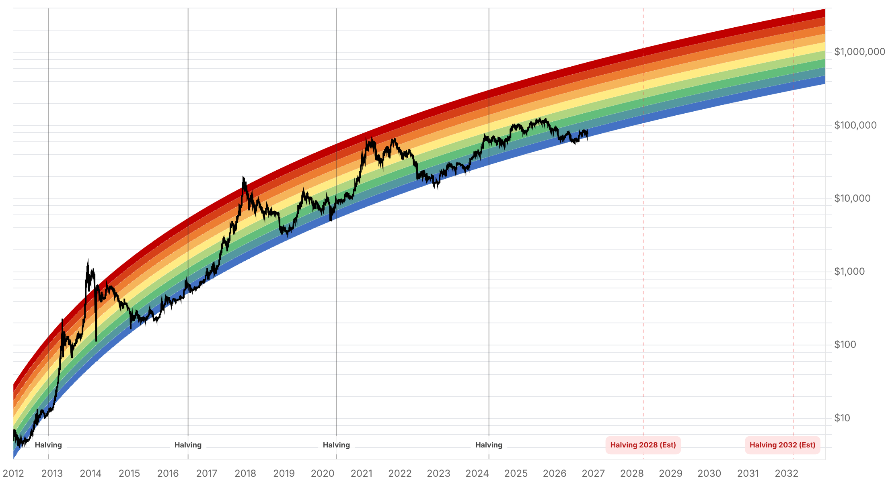

Reporte financiero
BTC cotiza en vivo a USD 75.752,95 (07:17 UTC, -0,00% intradía vs. cierre previo de USD 75.753,71), prácticamente sin cambios por tercer día consecutivo: USD 75.746,93 el viernes, USD 75.747,58 el sábado y USD 75.752,95 hoy -una franja de apenas USD 6 en tres días-. La vela semanal cripto (cierre domingo 00:00 UTC) ya pasó durante esta ejecución y, dado lo plano que estuvo el fin de semana, cerró prácticamente pegada a la media móvil de 50 semanas (~USD 75.733 citada ayer): ni una ruptura alcista ni bajista clara, un 'doji' justo sobre el nivel de soporte técnico más vigilado del fin de semana -no se encontró cobertura de prensa que confirme el valor exacto de cierre semanal, por lo que esta lectura se basa en los datos propios de precio en vivo de este reporte, no en un artículo. Lo más relevante que cambió desde ayer es macro, no cripto: la probabilidad de una suba de tasas de la Fed en diciembre -que ayer se reportó con cautela por depender de una sola fuente (Closing Look, ~78%)- quedó corroborada por múltiples fuentes independientes hoy: CME FedWatch (vía 24/7 Wall St) la ubica en 76,8% al cierre del viernes 6 de noviembre, frente a 66,9% una semana atrás, con un rango intradía del viernes de 70% a 78% tras el dato de empleo; Reuters cita una cifra similar (~78%, bajando desde ~85% justo tras la publicación). El próximo catalizador es el IPC de octubre el martes 10 de noviembre, antes de la reunión de la Fed del 8-9 de diciembre. En el frente de Strategy/MSCI, se confirmó con múltiples fuentes (más allá del ítem único de ayer) que la decisión del 11 de noviembre proviene de una regla ya finalizada por MSCI el 15 de octubre (no solo un rumor): las empresas 'no operativas' quedan inelegibles para los índices MSCI Global Investable Market, pero la exclusión de un miembro ya existente como Strategy requiere fallar el filtro en dos períodos de reporte anual consecutivos -por lo que una expulsión inmediata el 11 de noviembre es poco probable aunque la compañía quede señalada en esta revisión-; la exposición de fondos indexados en acciones MSTR es de ~13 millones de acciones (~USD 1.800M). No hay datos de flujos de ETFs del 7 de noviembre (sábado, sin operación en EE.UU.); el acumulado de noviembre se mantiene en -USD 1.300M en 5 sesiones (1 de entrada, 4 de salida) hasta el 6 de noviembre, sin novedad frente a lo ya reportado ayer. El Fear & Greed Index rebotó de 25 (Extreme Fear) ayer a 28 (Fear) hoy -mejora el sentimiento mientras el precio sigue plano, revirtiendo (por ahora) el desacople que se señaló ayer en el sentido contrario-. Sin novedades verificadas desde ayer en: Clarity Act (sigue estancada desde septiembre), vulnerabilidad de BTCPay Server, lavado de los fondos del hackeo de Binance, apelación del Reino Unido sobre los 61.000 BTC y la respuesta de Cantor Fitzgerald al senador Blumenthal. Tampoco hay aún lectura de la apertura bursátil del lunes (mercados cerrados en el momento de este reporte), por lo que la pregunta planteada ayer -si la correlación BTC-Nasdaq se reafirma el lunes- queda pendiente para el próximo reporte.
El precio de BTC se mantuvo en una franja de apenas USD 6 entre el viernes y hoy: USD 75.746,93 (6 nov, cierre), USD 75.747,58 (7 nov, cierre) y USD 75.752,95 (8 nov, en vivo, 07:17 UTC). El cierre de la vela semanal cripto (domingo 00:00 UTC) ya ocurrió al momento de esta ejecución y, dada la planicie del fin de semana, se ubicó prácticamente en la media móvil de 50 semanas (~USD 75.733, cifra citada en el reporte de ayer) -ni una ruptura alcista ni bajista clara, un cierre neutro justo sobre el soporte técnico más vigilado. No se encontró cobertura de prensa que confirme esta lectura con una fuente independiente (es información todavía muy reciente); se reporta aquí a partir de los datos propios de precio en vivo de este workflow, no de un artículo.
El reporte de ayer citó con cautela una cifra de ~78% de probabilidad de suba de tasas (una sola fuente, Closing Look vía Substack). Hoy esa cifra queda corroborada de forma independiente: CME FedWatch (vía 24/7 Wall St, 7 nov) ubica la probabilidad de una suba de 25 puntos base en la reunión de diciembre en 76,8% al cierre del viernes 6 de noviembre, frente a 66,9% una semana atrás -con un salto intradía el viernes de 70% a 78% tras conocerse el dato de nóminas de octubre (+165.000 vs. ~65.000 esperado, desempleo en 4,1%)-. Reuters cita una cifra similar, ~78%, bajando desde un pico de ~85% inmediatamente tras la publicación del dato. El rendimiento del Tesoro a 2 años subió a 4,51% (desde 4,46%) y el a 10 años a 4,86% (desde 4,84%), mientras el índice dólar ganó 0,7%. El próximo catalizador es el IPC de octubre el martes 10 de noviembre (8:30am ET), antes de la decisión de la Fed del 8-9 de diciembre. De sostenerse, es el cambio de régimen macro más relevante para activos de riesgo -incluido Bitcoin- de los últimos reportes.
Múltiples fuentes (más allá del ítem único citado ayer) confirman que MSCI anunció el 15 de octubre una regla ya finalizada que trata a las 'empresas no operativas' (como Strategy, con su tesorería de Bitcoin) como inelegibles para los índices MSCI Global Investable Market Indexes, eliminando la exención temporal que existía para firmas con 50%+ de activos digitales. La lista final de constituyentes se publica el 11 de noviembre y cualquier cambio entra en vigor tras el cierre del 30 de noviembre. Un detalle relevante no reportado ayer: una empresa ya incluida en el índice, como Strategy, solo se excluye si falla el filtro en sus dos períodos de reporte anual consecutivos más recientes -por lo que una expulsión inmediata el 11 de noviembre es poco probable aunque la compañía quede señalada en esta revisión-. La exposición de fondos indexados en acciones MSTR es de aproximadamente 13 millones de acciones (~USD 1.800M), equivalente a ~60% del volumen diario promedio de 30 días de la acción. La remoción del índice no implica por sí misma una venta forzada de Bitcoin por parte de Strategy -esa sería una decisión separada de su directorio.
El índice de sentimiento cripto (alternative.me) subió de 25 (Extreme Fear) ayer a 28 (Fear) hoy, revirtiendo parte de la caída de los días previos (28 el jueves, 25 el viernes). El precio de BTC se mantuvo igual de plano que ayer, por lo que esta mejora de sentimiento no vino acompañada de un repunte de precio -el mismo tipo de desacople señalado ayer, pero ahora en sentido inverso (sentimiento mejora más rápido que el precio en vez de empeorar más rápido).
Los ETFs spot de Bitcoin en EE.UU. no operan en sábado, por lo que no hay dato de flujo para el 7 de noviembre; el acumulado de noviembre se mantiene en -USD 1.300M en 5 sesiones (1 de entrada el 4 de noviembre +USD 74,6M, 4 de salida: -USD 398,6M el 2 nov, -USD 115,6M el 3 nov, -USD 430,2M el 5 nov y -USD 411,9M el 6 nov), sin novedad frente a lo ya reportado ayer. Tampoco se hallaron desarrollos nuevos sobre la Clarity Act (estancada desde septiembre), la vulnerabilidad de BTCPay Server, el lavado de los fondos del hackeo de Binance, la apelación del Reino Unido sobre los 61.000 BTC (proyectada para 2027) ni la respuesta de Cantor Fitzgerald al requerimiento del senador Blumenthal. La apertura bursátil del lunes -clave para ver si la correlación BTC-Nasdaq se reafirma tras la divergencia del viernes- todavía no ocurrió al momento de este reporte.
| Periodo | Valor |
|---|---|
| 2 nov | 76677.3 |
| 3 nov | 77345.05 |
| 4 nov | 80405.29 |
| 5 nov | 75942.13 |
| 6 nov | 75746.93 |
| 7 nov | 75747.58 |
| 8 nov (en vivo) | 75752.95 |
| Periodo | Valor |
|---|---|
| Hoy | 28 |

“We're hiking the interest rate on your credit card... the most plausible way the AI capex arms race will end is that the credit card will be taken away.”
“Classic painful tightening stuff but not mortal unless job losses/credit event.”
El catalizador inmediato es el IPC de octubre el martes 10 de noviembre, el dato que puede mover la probabilidad de suba de tasas de la Fed en diciembre (76,8-78% según CME FedWatch/Reuters) antes de la reunión del 8-9 de diciembre. La apertura bursátil del lunes -todavía no ocurrida al momento de este reporte- es la otra variable clave: si la correlación BTC-Nasdaq se reafirma tras la divergencia del viernes (acciones subieron, BTC se mantuvo plano), un lunes alcista en Wall Street podría finalmente mover a BTC de su franja de tres días en USD 75.700-75.900; si la divergencia persiste, reforzaría la lectura de que el mercado cripto está digiriendo su propio problema de sentimiento de forma independiente.
La corroboración de la probabilidad de suba de tasas de la Fed (~77-78%, ya no una sola fuente) eleva el riesgo macro para todos los activos de riesgo, Bitcoin incluido, de cara a la reunión del 8-9 de diciembre. La revisión de MSCI del 11 de noviembre sobre Strategy, aunque confirmada como una regla ya finalizada, tiene un mecanismo de exclusión de dos ciclos consecutivos que hace poco probable una remoción inmediata -reduce algo la urgencia del riesgo de venta forzada de ~USD 1.800M en acciones MSTR que se señalaba como inminente. El streak de cinco sesiones de salidas del IBIT (>USD 1.000M desde el 30 de octubre, sin dato nuevo por el fin de semana) sigue siendo la señal de desinversión institucional más relevante a monitorear cuando reabran los mercados el lunes.
Sin cambios en los objetivos de precio de largo plazo ya reportados en ediciones anteriores (Citigroup, Bernstein, Standard Chartered, Tom Lee, NYDIG, Armstrong, piso de costo de producción de JPMorgan en USD 94.000). BTC sigue muy por debajo de su máximo de 52 semanas de USD 107.428. El paralelismo de Rekt Capital con mayo-junio de 2026 (reportado anteayer) sigue vigente como recordatorio de que las reversiones post-rally pueden ser rápidas y profundas en este ciclo, aunque la planicie de los últimos tres días no muestra, por ahora, una continuación de esa caída.
Con la probabilidad de suba de tasas de diciembre ya corroborada por CME FedWatch y Reuters en ~77-78%, el dato de inflación del martes es el próximo punto que puede mover esa cifra de forma significativa en cualquier dirección -más relevante para la tesis macro que cualquier movimiento de precio de BTC durante el fin de semana, que se mantuvo prácticamente plano.
La regla de MSCI, aunque finalizada, requiere que una empresa ya incluida en el índice falle el filtro en dos períodos de reporte anual consecutivos antes de ser removida -un mecanismo más gradual que el que sugería la cobertura de prensa de días anteriores. Tratar el 11 de noviembre como el día de un anuncio de elegibilidad, no necesariamente como el día de una salida forzada de ~USD 1.800M en acciones MSTR.
La divergencia del viernes (Wall Street al alza, BTC plano) y la planicie de tres días de BTC en USD 75.700-75.900 todavía no se pusieron a prueba contra una sesión bursátil completa. Actuar sobre una supuesta ruptura o confirmación de la correlación BTC-Nasdaq antes de ver el lunes de mercado sería prematuro.